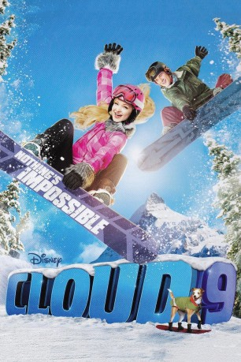
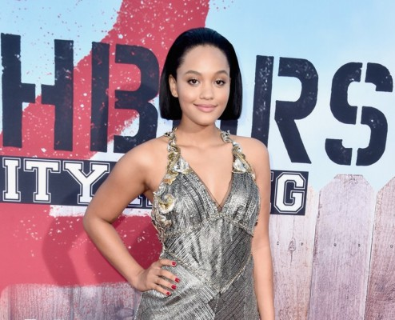

#7519 Halfpipe Feeling
Alternativ: Cloud 9
 
 IMDB-Wertung: 6.8 / 10
IMDB-Wertung: 6.8 / 10  Metascore: 0
Metascore: 0 
Kayla hat alles: sie ist reich, schön und die beste Snowboarderin im Ort! Das dachte sie zumindest, bis sich herausstellt, dass sie alle Wettbewerbe nur gewonnen hat, weil ihrem Vater das Skigebiet gehört! Sie trifft Will, einen ehemaligen Snowboard-Champion, der sich nach einem tragischen Sturz mit seinem Karriereende abgefunden hat. Werden die beiden noch zeigen können, was wirklich in ihnen steckt?
Jahr: 2014
Dauer: 83 Minuten
FSK:
Land: USA Studio: Disney ChannelTonspuren: DD2.0 - ,
Untertitel:
Auflösung: 1080p (1920x1080) Größe: 4976 MB
Genre: Action, Drama, Abenteuer, Familie, Sport
Regisseur: Paul Hoen
Drehbuch: Justin Ware
Soundtrack:
Darsteller:
- Luke Benward als Will
 Dove Cameron als Kayla
Dove Cameron als Kayla-  Kiersey Clemons als Skye Sailor
- Mike C. Manning als Nick Swift
- Dillon Lane als Burke
- Carlon Jeffery als Dink
 Andrew Caldwell als Sam
Andrew Caldwell als Sam Patrick Fabian als Richard Morgan
Patrick Fabian als Richard Morgan- Amy Farrington als Andrea Cloud
 Jeffrey Nordling als Sebastian Swift
Jeffrey Nordling als Sebastian Swift- K. Danor Gerald als Camera Operator
- Colton Tran als Mike Lamb
 Joe Cappelletti als Snowboard Competition Announcer
Joe Cappelletti als Snowboard Competition Announcer- Allan Groves als Announcer
- Angella Joy als Judge
- Mason D. Davis als Random Dude
- Kelsie Mathews als High End Spectator
- Victoria Moroles als Pia
- Trevor Snarr als Security Guard Bennie
- Kenda Benward als Madeline
- Tatum Chiniquy als Linds
- Paul Kiernan als Marshall
- Joshua David McLerran als Spectator
- Deborah Lee Douglas als Jennifer - Skiier , uncredited
- Christopher Escalante als Competition Spectator , uncredited
- Quinci Staker als Snowboarding Spectator , uncredited
- Jeff Fischer als Snowboard Competition Announcer
- Kira Peacock als Snowboarder
- Stacy Sobieski als Photographer
- Bryan Daley als Event Organizer
- Ken Foody als Visiting Dad
- James Gaisford als Assistant
- Rex Jensen als Spectator
- Karen Peterson als Competition Spectator
- Jason Tatom als Mr. Rourke
- Chad Wright als Snowboarder
- Michelle Zeller als Sarah
- Kristin Dean als Ice Skater , uncredited
- Phillip Estes als Will Cloud Fan , uncredited
- Carl Jorgensen als Richard's Collegue , uncredited
- Vaughn Odenbrett als Richard's Colleague , uncredited
- Tiffany Quilter als Snowboarder , uncredited
- Kira Walker als Competition spectator , uncredited
- Trevor Woolsey als Snowboarding Extra , uncredited
Datei: X:\2014(G-M)\Halfpipe Feeling (2014, FSK, 1920x1080).mkv seit 15.11.2017
Festplatte: HD 2013(I-Z)-2014(A-Z)
 Es gibt insgesamt 136 Filme in der Gruppe '2014(G-M)'
Es gibt insgesamt 136 Filme in der Gruppe '2014(G-M)'